Beeld
VIII. ANDERE BETEKENIS VAN BEELDELEMENTEN
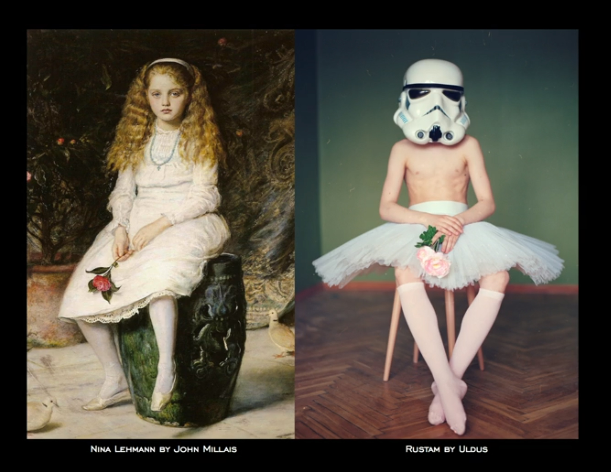
Uldus Bakhtiozina - Rustam
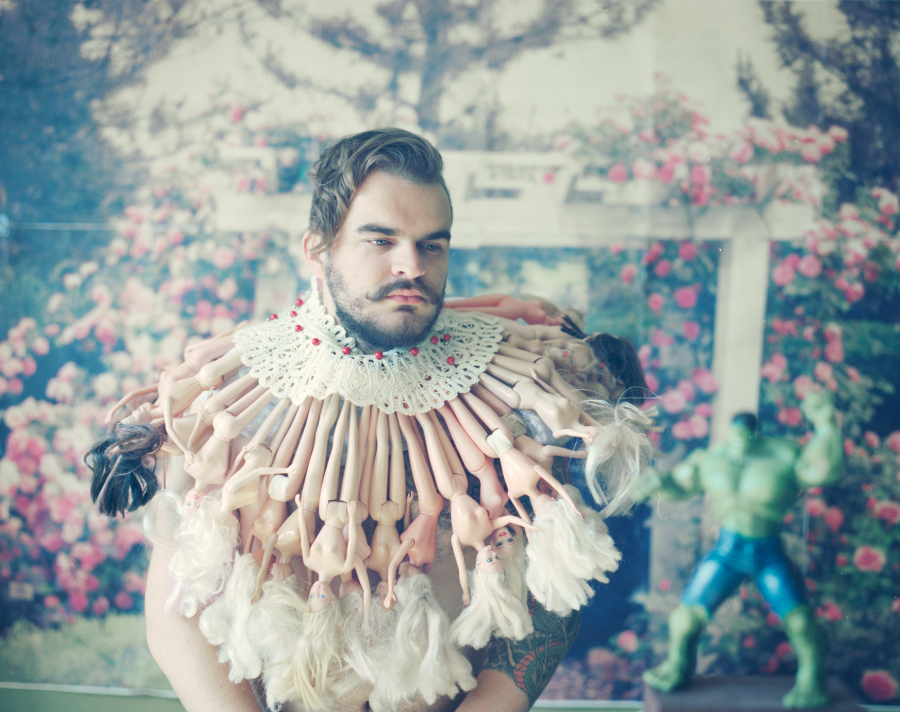
Uldus Bakhtiozina - Hulk
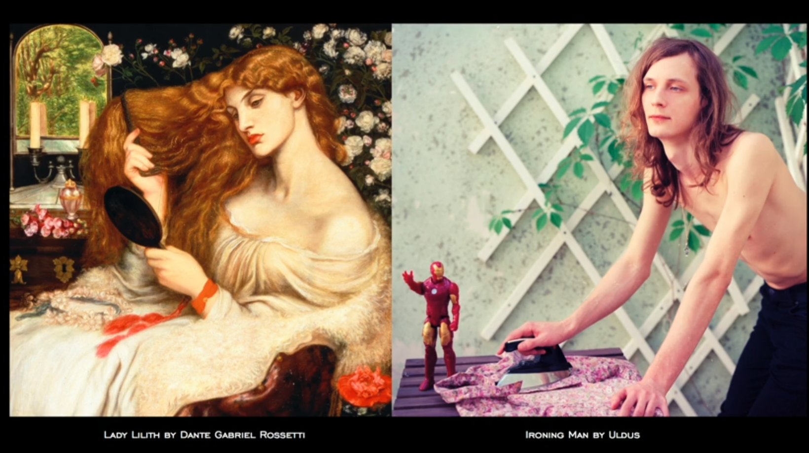
Uldus Bakhtiozina - Ironing Man
Uldus Bakhtiozina
In haar project Desperate Romantics bestudeerd Bakhtiozina schilderijen en geeft hier een nieuwe eigentijdse betekenis aan door zich te laten inspireren door de normen, waarden en de sociale problematiek waar ze zich in Rusland in bevond. Ze deconstrueert het originele schilderij, door eerst de elementen (gezichtsuitdrukkingen, houdingen, objecten, kleding etc.) uit elkaar om zo de veronderstellingen, oordelen, betekenissen en visies hiervan te ontdekken. Vervolgens zoekt ze naar alternatieve beelden en metaforen voor die elementen zodat deze naar een ander schema getransformeerd worden. Deze elementen refereren tegelijkertijd naar het originele schilderij. Elk element heeft een eigen betekenis. Het zijn fragmenten die door het samenbrengen zorgen voor het maken van nieuwe connecties en het krijgen van een andere betekenis.
Voor de foto Rustam heeft ze het schilderij Nina Lehmann, gemaakt door John Millais, als inspiratie genomen. De 12 jarige jongen die in de foto is afgebeeld, was een professionele danser, maar op school was het voor hem niet mogelijk om zich hierover uit te laten. Daarom draagt hij een masker zodat hij zich meer verbonden voelt met zijn medeklasgenoten en zo sociaal geaccepteerd wordt, zo legt Bakhtiozina uit in haar TED Talk18. Het schema ’12 jarige jongen’ is niet het eerste schema dat bij ons opgeroepen wordt. Het eerste schema is vaak een stereotyperend schema (het is geen jongen maar een meisje) hier maakt ze de toeschouwer bewust van.
In de foto Nikita laat ze een man zien, waarbij ze barbiepoppen gebruikt om te refereren aan een kraag. Deze poppen zullen we waarschijnlijk gelijk koppelen aan het schema ’vrouwelijkheid’. De kraag krijgt zo ook een romantische lading. Het tonen van kwetsbaarheid en romantiek is in Rusland not done voor een man. De man wil deze kanten juist verbergen. Hierbji maakt Bakhtiozina ook gebruik van Detournement. De kwetsbaarheid die de man in zich draagt wordt naar de buitenwereld omgekeerd. Want ’het omringd worden met vrouwen’ is het beeld dat een man juist wel wil uitstralen.
Soms zoekt ze naar gezichtseigenschappen die overeenkomen met het schilderij of ze speelt met woorden. Dit is te zien in de foto Ironing man waar ze speelt met de woorden Irony, Iron Man en Ironing man. In het stereotyperende schema rond man en vrouw in Rusland is de actiefiguur Iron Man jongensspeelgoed en strijken is een taak voor vrouwen.
Op deze manier sluit Bakhtiozina aan op het feit dat het belangrijk is om als beeldmaker verantwoordelijkheden te voelen voor het geven van een andere visie op een situatie via het werk, dus door gebruik te maken van reframing. Ze geeft een draai aan haar beelden welke we niet gewend zijn om in ons dagelijks leven te zien, maar de elementen behouden wel hun originele, symbolische betekenis. Door de schilderijen te herkaderen en alternatieve lenzen zichtbaar te maken stelt ze op die manier de stereotyperingen rond man en vrouw in Rusland ter discussie. Ze gebruikt ironie en onvoorspelbaarheid als een gereedschap om deze manier van reframing te bewerkstelligen.
18
Bakhtiozina, U. (2014). Wry Photo's that turn stereotypers upside down [Video]. Geraadpleegd van https://www.ted.com/talks/uldus_bakhtiozina_wry_photos_that_turn_stereotypes_upside_down
IX. HET GEBRUIK VAN COLLAGES
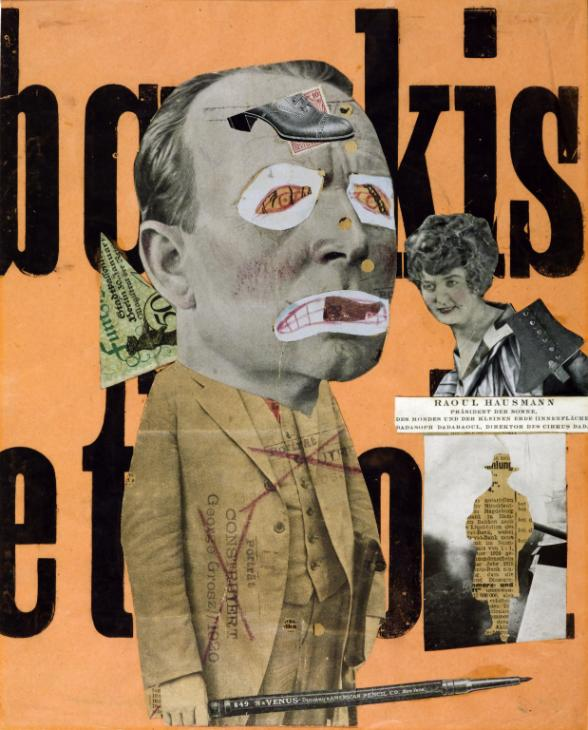
Raoul Hausmann - The Art Critic
Door afbeeldingen, teksten en structuren uit hun originele context te halen en ze vervolgens samen te brengen in een collage kunnen er nieuwe verbanden ontstaan. Het is een techniek waarmee snel een interessant eindresultaat bereikt kan worden. Er kan vervreemding mee gecreëerd worden en tot de verbeelding spreken. Zoals Guy Debord verklaart in hoofdstuk 6 over détournement: elk element, waar het ook vandaan gehaald wordt, kan dienen voor het maken van nieuwe combinaties. Dus wanneer twee afbeeldingen of teksten uit hun originele context worden gehaald en samengebracht worden, ongeacht hoever hun originele contexten uit elkaar liggen, zal er altijd een relatie gevormd worden tussen deze elementen.
Collages in het Dadaïsme
Het dadaïsme was een culturele beweging die tijdens de Eerste Wereldoorlog begon in Zürich in het neutrale Zwitserland. De kunstenaars van Dada hielden zich bezig met het combineren van beeldende kunst, poëzie, theater en grafisch ontwerp. Ze maakten gebruik van een irrationele denkwijze en ondermijnden de algemeen geaccepteerde standaarden. Deze beweging was duidelijk politiek betrokken. De dadaïsten hoopten met hun opstandige houding ook effecten teweeg te kunnen brengen op politiek niveau.
Kunstenaars in Dada maakten gebruik van voorwerpen die eigenlijk al bestonden en maakten er net iets anders van dan dat het origineel moest voorstellen. Het gebruik van toeval was een belangrijk creatief principe in de kunstuitingen van de dadaïsten.
Raoul Hausmann (Wenen, 1886) was een belangrijk kunstenaar, theoreticus en schrijver voor de groep dadaïsten in Berlijn19. Een bekend werk van Hausmann is The Art Critic. Net zoals de Internationale Situationisten maakt Hausmann gebruik van de toe-eigening van beelden of ideeën en verandert hun bedoelde betekenis op een manier dat het de dominante cultuur provoceert. Dit werk provoceert het idee van de traditionele kunstcriticus en de motivaties en kwalificaties die deze criticus heeft om te bepalen wat acceptabele kunst is. Hij hield niet van de vooroordelen van de critici jegens de traditionele stijlen in de kunst. The Art Critic belichaamt eerder een chaotische organisatie van foto’s en knipsels om deze gevoelens uit te drukken20.
Het centrale onderwerp in Hausmann’s werk is de kunstcriticus. In dit werk maakt hij gebruik van een vergroot, uitgeknipt mannenhoofd. Deze man moet George Grosz voorstellen, medelid van de Dada, in de rol van de kunstverslaggever21. De getekende ogen van de criticus kunnen niet goed zien, dit geldt dan ook voor de kunst die hij bekijkt. Het potlood komt uit een context wat niet te achterhalen valt, maar door de positie en combinatie met de kunstcriticus krijgt het potlood de betekenis van een strijdwapen. En doordat het potloot vergroot is laat Hausmann op die manier de macht van de criticus zien, hij mag schrijven wat hij wil. Het potlood wordt dus getransformeerd. En dit door de combinatie met de andere elementen in de collage. Het potlood ziet er hetzelfde uit, maar het betekent iets anders. Het fragment van een Duits bankbiljet dat geplaatst is achter de nek van de criticus, suggereert dat hij onder controle is van kapitalistische machten. Door de toevoeging van deze nieuwe betekenislaag wordt het ’frame’ van de gebeurtenis herzien. De letters in de achtergrond zijn net zoals de woorden van de criticus luid en onpeilbaar. De woorden komen uit een stuk van een krant over bedrijven en relateren binnen het frame van dit werk naar de goederenhandel.
Elk element heeft zijn eigen betekenis en door het samenvoegen van deze elementen resulteert het in herziening van het eerste frame. Dus, door het samenvoegen van beelden uit verschillende contexten creëert Hausmann een vertekening van de verschijning van de criticus. Hierdoor laat hij zien dat de meningen van de criticus ook vertekend en irrelevant zijn.
19
Blumberg, N. (z.j.). Raoul Hausmann. Geraadpleegd van http://www.britannica.com/biography/Raoul-Hausmann
20
Raoul Hausmann, the art critic. Geraadpleegd van https://utopiadystopiawwi.wordpress.com/dada/raoul-hausmann/the-art-critic/
21
E. Dietmar. (2004). Dadaism. Los Angleles: Taschen, p. 36
X. DE RELATIE TUSSEN BEELD EN TEKST
De verbanden die er gemaakt kunnen worden tussen tekst en beeld kunnen spannend worden gemaakt wanneer er rekening gehouden wordt met o.a. associatie en context waarin het beeld en de tekst gebruikt worden. Door te spelen met verbindingen tussen woord en beeld kunnen er combinaties worden gemaakt met uiteenlopende betekenissen. Wanneer worden deze combinaties spannend?
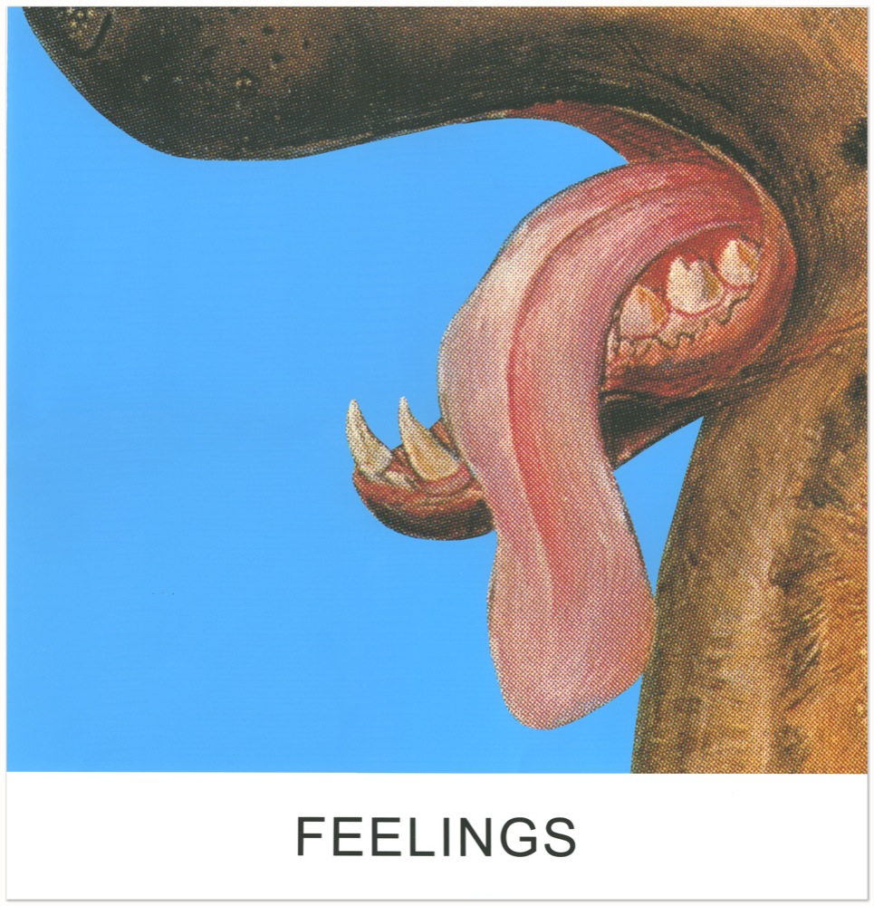
John Baldessari - Feelings (Double Play)
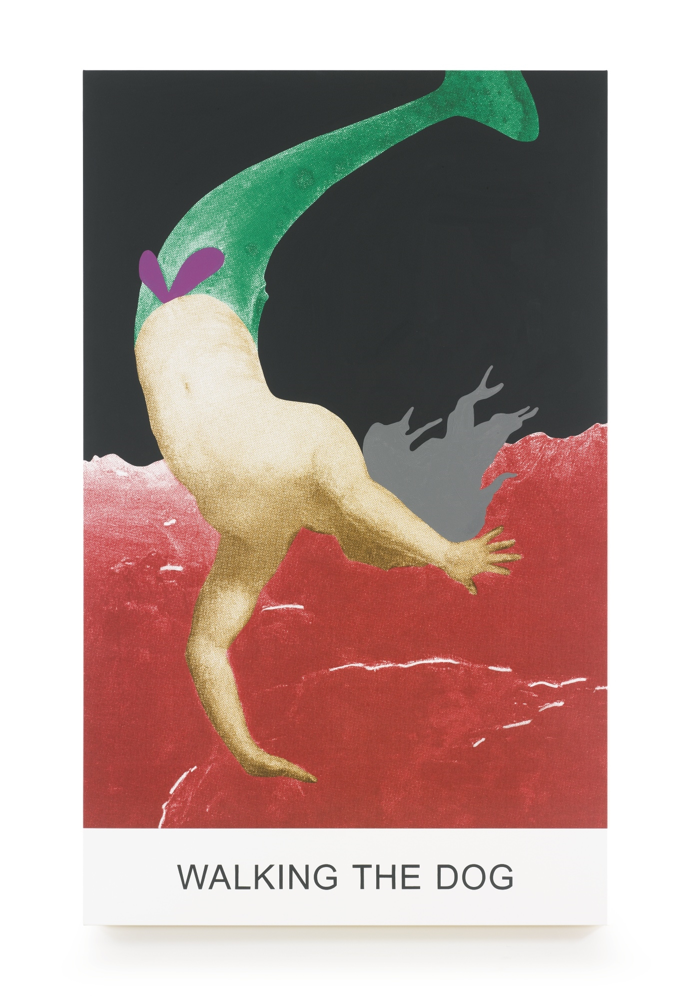
John Baldessari - Walking the dog (Double Play)
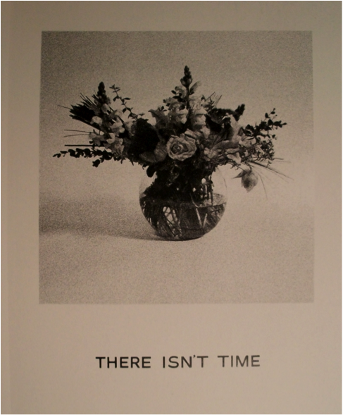
John Baldessari - There isn't time (Goya Series)
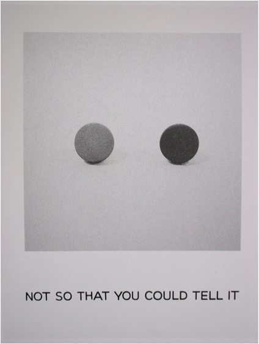
John Baldessari - Not so you could tell it (Goya Series)
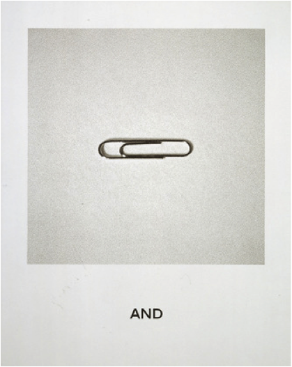
John Baldessari - And (Goya Series)
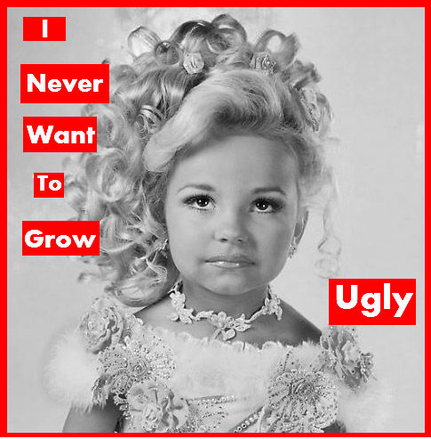
Barbara Krunger - I never want to grow ugly
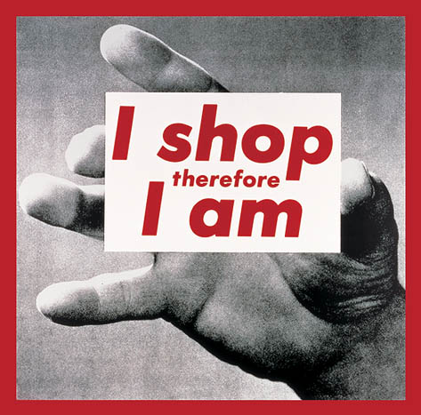
Barbara Krunger - I shop therefor I am

Gert Jan Kocken - Disaster Areas
John Baldessari
Een beeldontwerper die zich bezighoudt met de combinatie van tekst en beeld is John Baldessari (Californië, 1931). Baldessari is een Amerikaans kunstenaar en belangrijke vertegenwoordiger van de conceptuele kunst. Taal is ook bij deze kunstenaar altijd al een belangrijke factor geweest in het werk. Hij vindt dat taal en beeld gelijk in waarde zijn en in zijn werk heeft hij vaak beiden22. Hoe gebruikt hij deze twee componenten en hoe verhouden zij zicht tot elkaar?
Laat in 1960 schoof Baldessari het schilderen opzij en begon hij woorden te gebruiken als eenzelfde element zoals beeld. In een interview met Hans Ulrich Obrist zegt hij: ”Je kunt met woorden bouwen, net zogoed als dat dit met beeld kan”�23. Hij koos tekst als een nieuw medium, maar koos er ook weer voor om deze woorden op een canvas te schilderen. Baldessari gebruikt tegenstellingen binnen de tekst en beeld en zorgt er op die manier voor dat er achterdocht en twijfel wordt gecreëerd. Schrijver Russel Ferguson betitelt Baldessari in zijn essay John Baldessari: Pure Beauty24 daarom ook als de ”onbetrouwbare verteller”.
Zijn project Double Play bestaat uit schilderijen welke hun grondstoffen halen uit kunsthistorische en populaire culturele bronnen. In deze serie wilt Baldessari de connectie tussen beeld en taal juist moeilijker maker inplaats van gemakkelijker. Dit is erg lastig want die connectie maken is juist wat men automatisch wilt doen, dit is niet tegen te houden. Hij gebruikt titels van muzieknummers om te onderzoeken welke tekst geen directe connectie heeft met het beeld. Deze nummers variëren van Tom Waits tot Shirley Temple.
De schilderijen zorgen ervoor dat de toeschouwer door het werk navigeert en connecties maakt tussen de niet-verwante delen. De visuele en tekstuele elementen zijn uit hun context geplaatst en de suggestie van een muzieknummer zorgt voor een soundtrack voor elk werk.
De titel, Double Play, refereert daarom ook naar de ’play’ knop.
Baldessari kijkt naar het visuele aspect van het beeld en niet naar het onderwerp ervan. In zijn werk ‘ feelings’ laat hij een afbeelding van een hond zien, maar bij het werk ’walking the dog’ verschijnt er juist geen afbeelding van een hond. Hierdoor schept hij een interessante verwarring en stelt de waarneming ter discussie. Het lijken misschien keuzes gebaseerd op toeval, maar ze zijn juist heel erg overwogen om enige connectie te vermijden. Het interessante hieraan is dat men toch een connectie zal maken, hoe raar deze ook is.
In een groot gedeelte van zijn werk zijn tekst en beeld wederzijds afhankelijk van elkaar. In Baldessari’s Goya Series uit de jaren negentig is de interactie tussen het viusele en het geschreven aspect goed te zien. Door het naast elkaar plaatsen van zwart-wit foto’s met als onderwerp alledaagse objecten, welke nu worden neergezet als stillevens, in combinatie met titels uit Francisco de Goya’s Disaster of War25, om daarmee heftigheid en geweld naar voren te brengen. Een aantal onderschriften van zijn foto’s zijn bijvoorbeeld: ”En” gecombineerd met een paper clip; “Er is geen tijd” met een bouquet bloemen in een vaas; en “Niet dat je het kunt zeggen” met twee ballen.
Het is moeilijk om zowel het beeld als de tekst tegelijkertijd waar te nemen. De tekst heeft een effect op het beeld en andersom, ze veranderen elkaars betekenis. Wanneer de tekst niet aansluit op de verwachting van de toeschouwer ontstaat er een spanning tussen de twee elementen. Hierdoor krijgt men ook een onverwachte uitkomst die verder gaat dan de eerste waarneming. Door het samenvoegen van tekst en beeld en hun representatie, wordt het publiek gedwongen om de rol in te nemen van vertaler.
Hier is de verklaring van Guy Debord over Detournement ook van toepassing. Wanneer twee objecten (in dit geval het beeld en de tekst) samengebracht worden, ongeacht hoever hun originele contexten uit elkaar liggen, zal er altijd een relatie gevormd worden tussen deze objecten. Het elkaar beïnvloeden van twee gevoelswerelden of het bij elkaar brengen van twee onafhankelijke uitdrukkingen overstijgt de originele woorden of beelden en daagt de toeschouwer uit om een verband te zoeken. Toevoeging van de tekst aan het beed en andersom, zorgt voor een transformatie in de betekenis en zorgt zo voor een herziening van het ’frame’ van de gebeurtenis waar het om gaat.
22
The relationship of text and image in John Baldessari’s work. (2011, 26 oktober). Geraadpleegd van https://travelandarts.wordpress.com/2011/10/26/the-relationship-of-text-and-image-in-john-baldessaris-work/
23
Obrist, H. U. (2010, 28 februari). Hans Ulrich Obrist & John Baldessari. The Conversation Series.
24
F, Russell. (2009). John Baldessari: Pure Beauty, eds. L. Jones and J. Morgan. Londen: Tate Modern, p. 87-94.
25
Sooke, A. (2014, 17 juli). Goya's Desasters of War: The truth about war laid bare. Geraadpleegd van http://www.bbc.com/culture/story/20140717-the-greatest-war-art-ever
Barbara Kruger
Zoals in het theoretische gedeelde van deze scriptie is beschreven gebruiken we schema’s om grip te krijgen op onze kennis van de wereld om ons heen. Barbara Kruger (1945, Verenigde Staten) is een Amerikaanse conceptuele kunstenaar met een verleden in Grafisch Ontwerp. Krunger wilt met haar werk ervoor zorgen dat we onze gebruikelijke schema’s over onszelf, de maatschappij, economie, politiek, seksualiteit en cultuur herzien. Hierbij is het gebruik van reframing erg belangrijk. Hoe gebruikt ze dit in haar werk?
Kruger haalt haar afbeeldingen uit hun originele context in tijdschriften en gebruikt ze als achtergrond voor haar werk. Ze eigent zich op die manier de clichés en technieken toe die in de massamedia worden gebruikt. De beeldtaal uit de massamedia heeft namelijk zeer krachtige communicatiemogelijkheden. Door beelden waar Krunger mee werkt waar te nemen, maken we een connectie met de beeldbank in ons brein en de betekenis die daar bij hoort. Deze beelden hebben we namelijk al opgeslagen in ons brein en hebben een herkenbare context voor ons. Hierna vormen we ons een mening over wat we zien. Op het eerste gezicht krijgt men een reclameboodschap te zien. De boodschap die de massamedia uitzenden zodat men wordt aangezet tot consumptie vervangt ze vervolgens door kritische, confronterende oneliners. Door het gebruik van elementen waarvan we de originele context direct kunnen aanroepen en dit te combineren met een tegenstrijdige tekst wordt de originele betekenis omgekeerd en ontstaat er een nieuwe laag.
In haar werk Untitled (I Shop Therefore I Am) maakt Krunger duidelijk gebruik van Detournement. Ze heeft hierin René Descartes’ filosofische visie van het cognitieve bestaan, ‘I think therefore I am’, opnieuw geformuleerd en het beeld gedeconstrueerd met een kritiek op het kapitalisme als gevolg26. Als eerst instantie zien we een hand die een kaart vasthoudt. Door de toevoeging van de tekst krijgt het beeld ineens een andere lading en wordt het dus gereframed. Het 9.2 vierkante meter beeld van een hand die een creditkaart vasthoudt kan vervolgens worden gezien als een uitvergroting van de macht die het in zich draagt. De kleine creditkaart die zo veel levens beheerst wordt hierin geopenbaard als tiran. Het gevolg hiervan is dat de verklaring 'I Shop Therefore I Am’ ook omgedraaid kan worden naar ’I don’t shop, therefore I am not’.
De manier waarop Kruger in haar collages beeld en tekst combineert zorgt voor een directe communicatie met de toeschouwer. De zinnen in haar werk bevatten namelijk vaak voornaamwoorden zoals: jij, jouw, ik, wij en zij. Het veranderen van deze persoonlijke voornaamwoorden kan de betekenis van het werk radicaal veranderen. Door het gebruik van deze woorden spreekt ze de toeschouwer direct toe en wijst hen op de schema’s over macht, identiteit en seksualiteit.
26
Foljambe, A. (z.j.). Ire and Desire: The Art of Barbara Kruger. Geraadpleegd van https://www.academia.edu/702407/Ire_and_Desire_The_Art_of_Barbara_Kruger
Gert Jan Kocken
We kunnen nog een stapje verder gaan waarbij de toevoeging van tekst aan beeld duidelijk een grote verandering teweegbrengt van de betekenis van het beeld. De Amsterdamse Fotograaf Gert Jan Kocken, (1971, Ravenstein) is een kunstenaar die, door op zoek te gaan naar het beeld achter het beeld, geschiedenis in indringende beelden weet vast te leggen. In zijn werk zet Kocken geschiedenis en geheugen in relatie tot het beeld.
In 1999 begon hij zijn serie Disaster Areas. Verschillende locaties waar zich ooit een grote ramp had voorgedaan werden door hem monumentaal en gedetailleerd gefotografeerd en op groot formaat afgedrukt. Wanneer we naar de foto van de zee kijken zien we dat deze kalm is, grijsblauw met kleine golfjes en dat de lucht egaal lichtblauw gekleurd is met een aantal witte vegen van de bewolking. Er is verder helemaal niets, geen boten, geen wolken, niets. Dit kunnen we ons meteen voorstellen, we gebruiken het schema van een rustige, esthetisch beeld van de zee. We hebben er verder geen verwachtingen van.
Tot het moment dat we de titel waarnemen: Zeebrugge (Belgium). De plek waar in 1987 vlak na vertrek, een boot kapseisde, waarbij 193 mensen omkwamen. 27Opeens transformeert het beeld totaal, niet alleen de gedachte aan het drama zelf, maar ook het besef van een groep mensen die voor eeuwig tot die gefotografeerde ruimte behoren. Juist door wat niet in beeld is gebracht wordt het echte drama voelbaar. Het frame bepaalt wat zichtbaar is en wat niet. Zoals Berger uitlegde in zijn boek Ways of Seeing, wordt de manier waarop wij de dingen zien, beïnvloed wordt door wat wij weten of geloven. Hij stelt ook dat alle beelden gemaakt zijn met een doel. Geen onafhankelijk of algemeen geldend doel, maar het doel van de maker. Het doel van Kocken is dat hij beeld wil produceren waarbij de toeschouwer zich blijft afvragen: hoe moet ik hier naar kijken? Kocken wil ook zichzelf diezelfde vraag kunnen blijven stellen28. Doordat hij in zijn werk geen antwoorden geeft, maar zijn vragen deelt met de toeschouwer, wordt zijn werk ook gelaagd. De twee lagen (in dit geval de afbeelding en de titel) reageren op elkaar, waardoor er een uitkomst gecreëerd wordt die de som van de twee elementen overstijgt. Er ontstaat iets nieuws.
Als eerste instantie wordt er de key (zoals beschreven in hoofdstuk 5 van deze scriptie) ’esthetisch zeezicht’ toegepast, waarna door het lezen van het onderschrift de key wordt getransformeerd naar de key ’rampplek’. Ook hier voegt de transformatie een nieuwe betekenislaag toe. Toevoeging van een nieuwe betekenislaag betekent dus een herziening van het ’frame’ en resulteert in een gelaagd werk.
Uitsluiten van informatie is hierbij net zo belangrijk als de informatie die er wel wordt getoond.
Er wordt een onzichtbare betekenislaag gecreëerd wat zorgt voor gelaagdheid in het werk. De som overstijgt de twee losse elementen. Door niet direct te laten zien wat er op de zee heeft plaatsgevonden wordt er een verrassingseffect gecreëerd, wordt er ingespeeld op de verbazing en wordt de waarneming in twijfel getrokken. Het verhaal wordt veranderd. De twee losse fragmenten beeld en tekst reageren op elkaar en er komt een nieuwe uitkomst uit die bij de eerste perceptie niet zichtbaar was. Dit is de gelaagdheid die reframing kan creëren.
Door het herorganiseren van de content, wordt er een ander verhaal gecreëerd. Waarbij men zich gaat afvragen of het wel waar is wat er staat. Dit is het moment waar het spannend wordt. Doordat men zich dit gaat afvragen wordt de content in twijfel getrokken. Hierdoor wordt het probleem aan de kaak gesteld. Er word een reactie uitgelokt „dit kan toch niet waar zijn?” Terwijl het meestal wel een waarheid is die er aan zit te komen.
27
Barnas, M. De feiten en het beeld. Geraadpleegd van http://www.gertjankocken.nl/?ess=16
28
Gert Jan Kocken - Defacing. (2007, 16 augustus). Geraadpleegd van http://www.stedelijk.nl/tentoonstellingen/gert-jan-kocken-defacing
{kind=link}
{kind=link}
{kind=link}
{kind=link}
{kind=link}
{kind=link}
{kind=link}
{kind=link}
{kind=link}
{kind=link}
{kind=link}
{kind=link}
{kind=link}